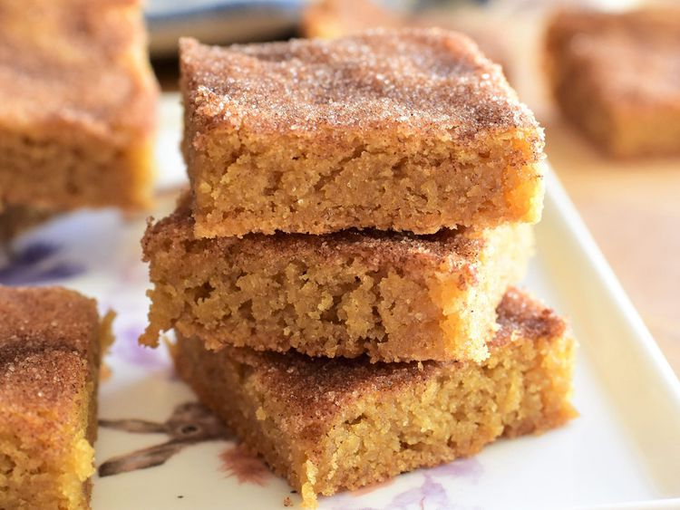

snickerdoodle bars.

Description
These easy-to-make snickerdoodle bars have all the charm of their namesake cookies, but without all the hassle of rolling out the dough.
You want to keep a close eye on these bars while they bake, and take care to not overbake them!
Ingredients
- 1/2 cup unsalted butter
- 1/2 cup white sugar
- 1/4 cup firmly packed brown sugar
- 1 1/2 cups semisweet chocolate chips
- 1 large egg, at room temperature
- 2 teaspoons vanilla extract
- 1 1/2 cup all-purpose flour
- 1/2 teaspoon cream of tartar
- 1/2 teaspoon baking soda
- 1/2 teaspoon salt
- 1/4 teaspoon ground cinnamon, divided
- 1/8 teaspoon ground nutmeg
Topping
- 1 tablespoon white sugar
- 1/2 teaspoon ground cinnamon
Steps
- Preheat the oven to 350 degrees F (175 degrees C). Line an 8x8-inch square pan with enough parchment paper to have overhang on all sides.
- Cream together butter, 1/2 cup white sugar, and brown sugar in a bowl with an electric mixer until light and fluffy. Mix in egg and vanilla until thoroughly combined. Add in flour, cream of tartar, baking soda, salt, 1/4 teaspoon cinnamon, and nutmeg, and mix until a dough just begins to form.
- Place dough into prepared pan. Using lightly floured hands, press dough firmly and evenly into the bottom of the pan.
- In a small bowl, mix together 1 tablespoon white sugar and 1/2 teaspoon cinnamon. Sprinkle evenly over the dough.
- Place pan into the preheated oven, and bake just until the dough in the center of the pan feels barely set, 20 to 23 minutes. Do not over bake.
- Allow cookies to cool in pan for 10 minutes before removing to a wire rack to cool completely. Cut into 16 bars.